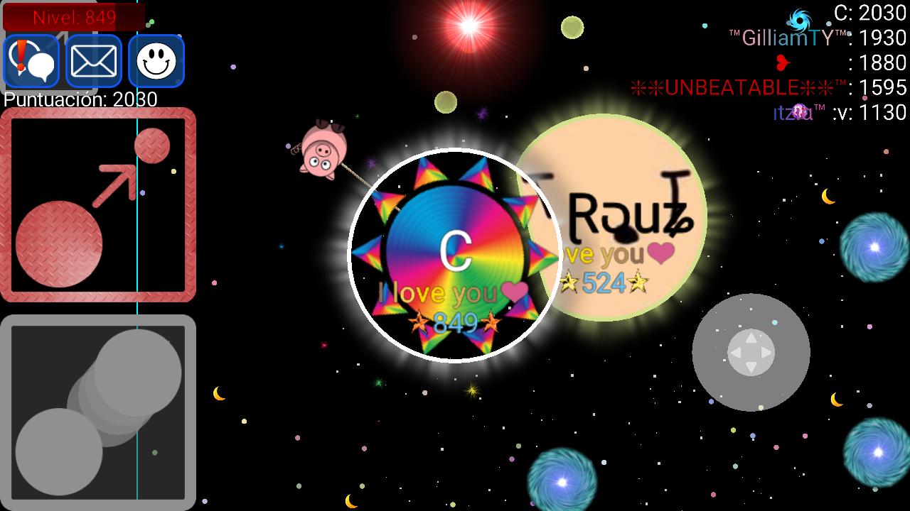
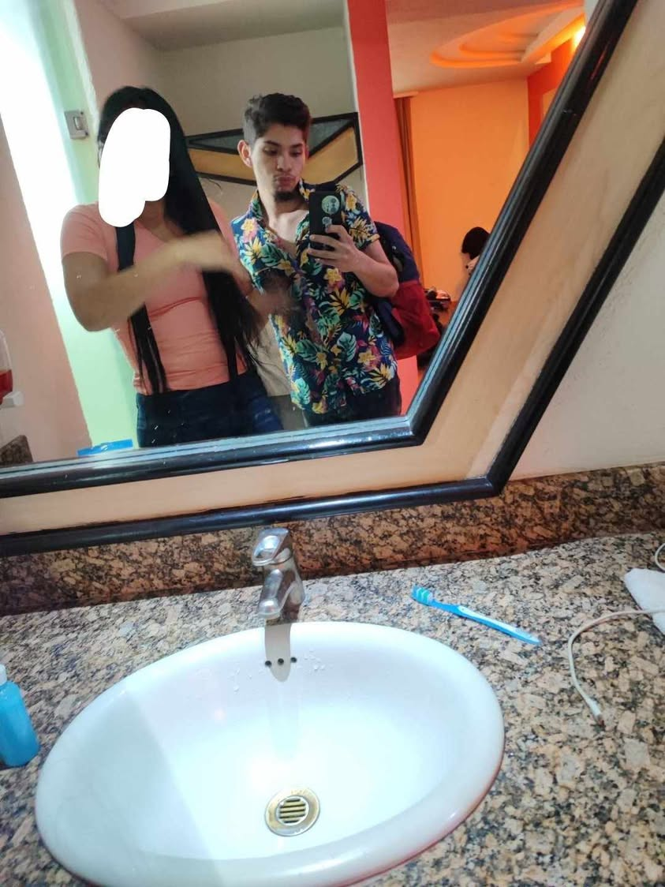
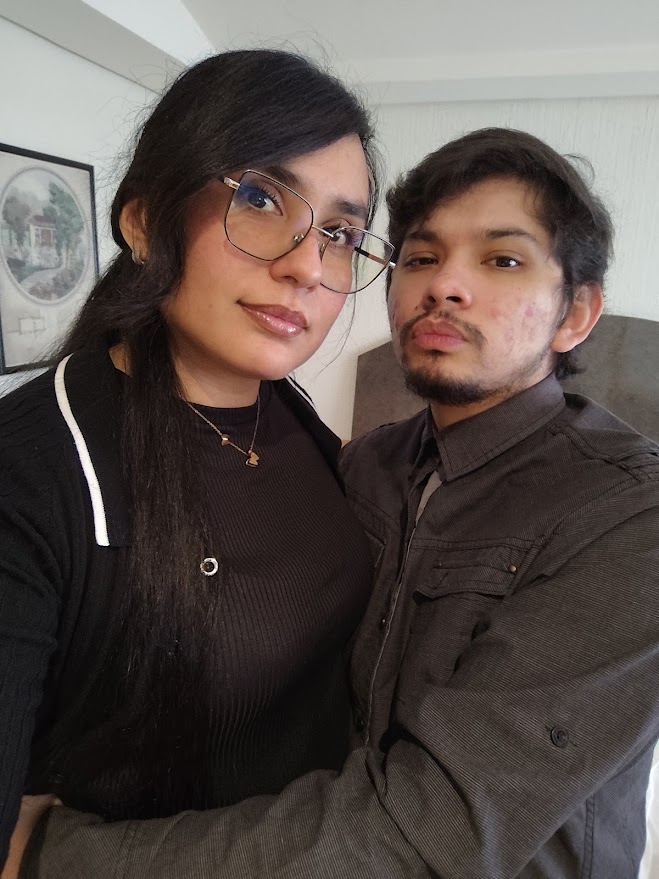
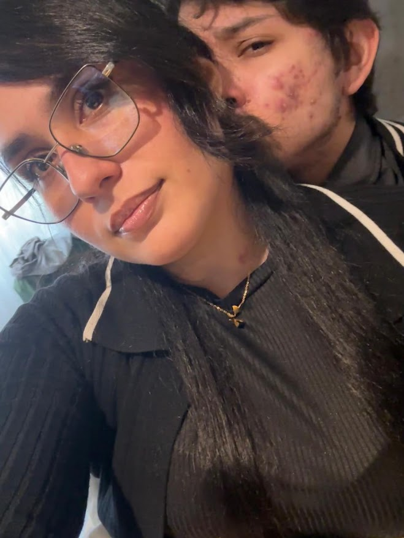

Perdónpor mis errores
Graciaspor quedarte
Siemprecontigo
Mi amor yo se que hemos tenido ultimamente una relacion bastante dificil por que ha habido muchos errores de parte de ambos mas mios yo se y te quiero pedir una gran disculpa por que soy un estupido
Si esta página suena, es porque cada vez que escucho Primera Cita me acuerdo de ti y de volver a empezar como la primera vez.
♥
Con cariño, siempre.
Nuestros momentos
Toca un corazón · cambia cada foto por la tuya en el código



